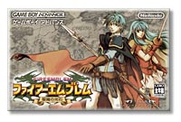
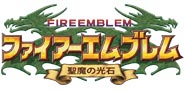

|  |
 |
 |
発売日：2004年10月7日
希望小売価格：4,800円（税込）
ジャンル：ロールプレイングシミュレーション
プレイ人数：１人〜４人
>> 公式ホームページへ
|
冬の夜長にじっくりゲームをやり込みたい人、そしてシミュレーションが大好きなあの人へは、『ファイアーエムブレム 聖魔の光石』をどうぞ。由緒ある人気ゲーム、『ファイアーエムブレムシリーズ』の最新作がゲームボーイアドバンスで登場。主人公の２人をはじめとする魅力的なキャラクターたち、数多く存在するユニットを使いこなす戦略性、そしてつながってゆくストーリー。多彩な楽しさでユーザーの心をガッチリ掴んでいる同シリーズですが、今回はさらに間口を拡げた親切設計が光ります。チュートリアルのほかにも辞書機能が追加され、いつでも用語や内容を確認できるようになりました。これで忘れっぽくても心配ナシ！
|
『聖魔の光石』では、エイリークとエフラムという２人の主人公から片方を選択することにより、途中でストーリーが分岐していきます。一度クリアしてもまた再トライして、選択しなかった方の幅広いストーリーが楽しめるつくり。通常のストーリーマップのほか、何度もチャレンジできる“EXマップ”が設定され、仲間を成長させたり戦略を練ったりすることが出来るようになっています。仲間キャラクターもクラスチェンジ後のクラスを選べてますますパワーアップ。自分オリジナルのユニット編成で、より奥の深い戦いを展開することが可能に。もちろん一度失った仲間は戻らないなど、シリーズ伝統のルールは健在。手塩にかけて育てたユニットたちは、本当にかわいいものです。悲しい思いをしないために、注意して作戦を立てましょう！
|
シミュレーション未体験の人にも絶対に楽しめるゲームなので、これから新分野のゲームを開拓したいと思っている人にもオススメです。ストーリーとともに、手の込んだキャラクターづくり・ストーリー展開がなされているので、男性でも女性でもその奥深い魅力にとりつかれてしまうはず。長い冬の夜、腰をすえてじっくりと遊びたいなら『ファイアーエムブレム 聖魔の光石』がピッタリ！
|
|